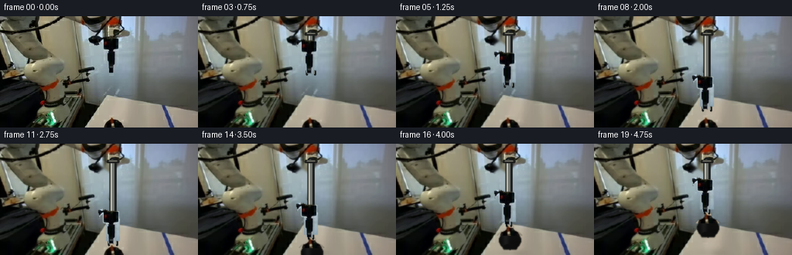
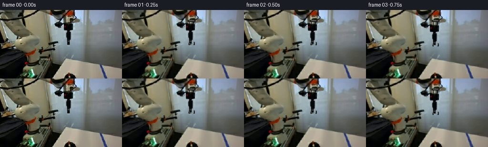
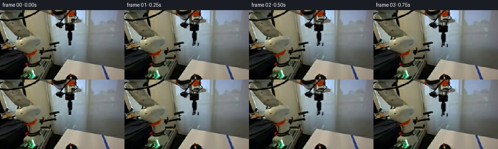
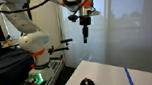
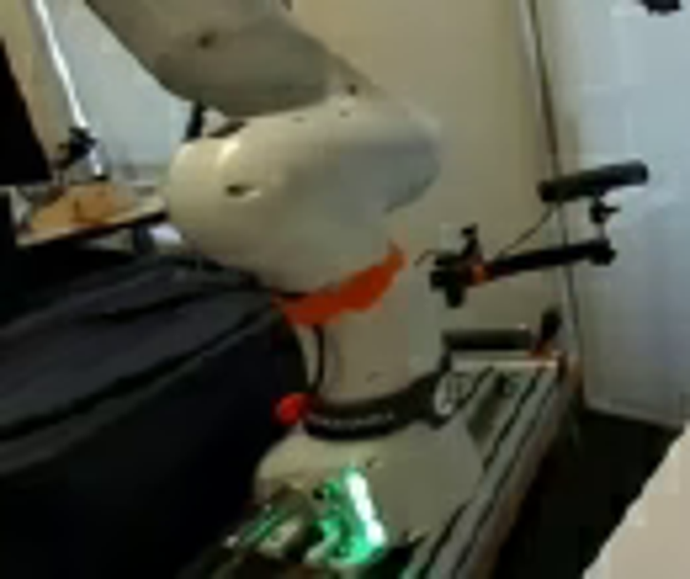
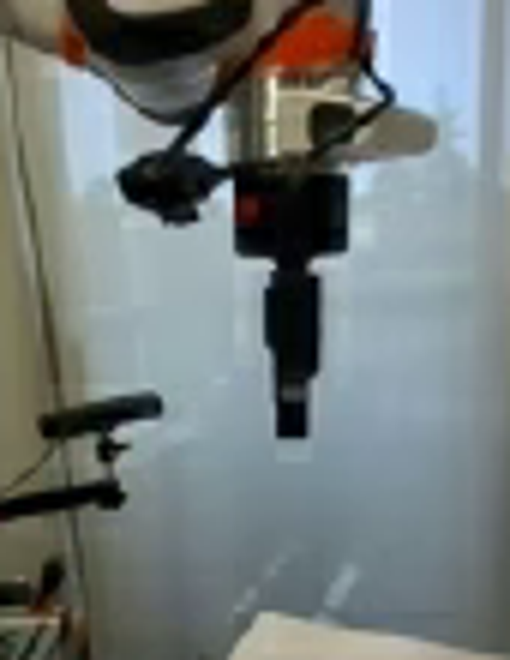
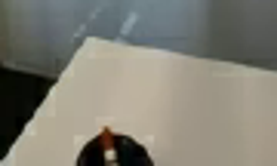
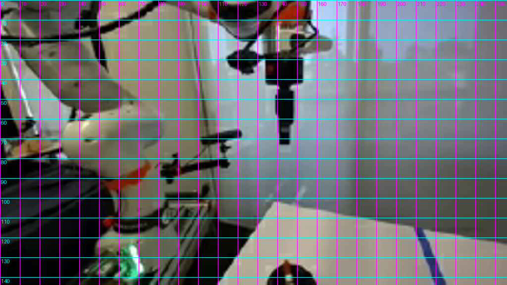
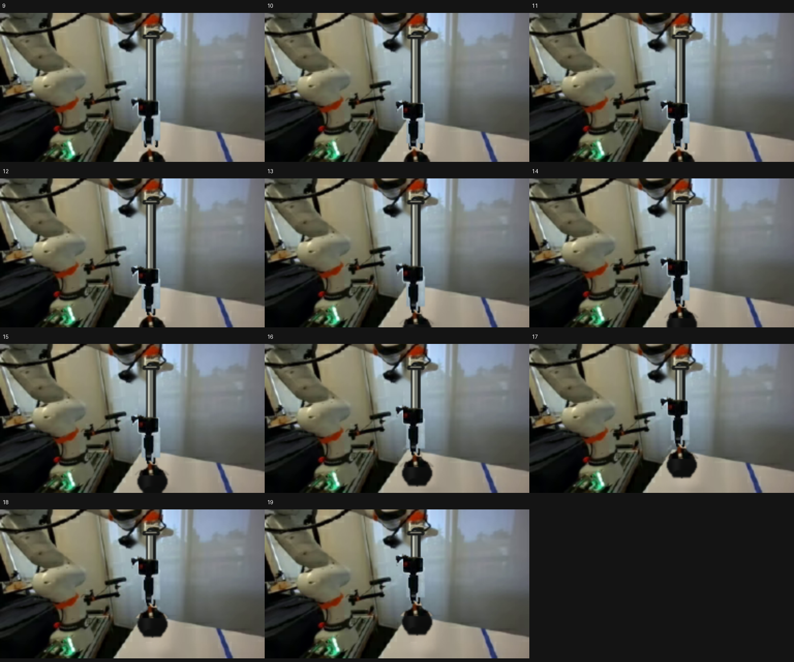

CODING AGENTS AS PIXEL WORLD MODELS
traex/GPT-5.6-Sol · common50_0012
点击播放 · 原生 RGB 像素
逐轮保存的候选
回放视频、检查图与代码变化。
每份候选均可单独播放。实际图片检查记录在下方工具轨迹中。
候选 01播放与检查图
点击播放 · 原生 RGB 像素


展开代码变化
--- 上一保存版本
+++ 本次保存版本
@@ -0,0 +1,202 @@
+from pathlib import Path
+import numpy as np
+import cv2
+from PIL import Image, ImageDraw
+import artifact_io
+
+CASE = Path(__file__).resolve().parent
+H, W = 144, 256
+
+
+def smoothstep(x):
+ x = np.clip(x, 0.0, 1.0)
+ return x*x*(3.0-2.0*x)
+
+
+def alpha_over(base, rgb, alpha):
+ a = alpha[..., None].astype(np.float32)
+ return np.clip(base.astype(np.float32)*(1-a) + rgb.astype(np.float32)*a, 0, 255).astype(np.uint8)
+
+
+def translated_sprite(rgb, alpha, dx, dy):
+ M = np.float32([[1,0,dx],[0,1,dy]])
+ r = cv2.warpAffine(rgb, M, (W,H), flags=cv2.INTER_LINEAR,
+ borderMode=cv2.BORDER_CONSTANT, borderValue=(0,0,0))
+ a = cv2.warpAffine(alpha, M, (W,H), flags=cv2.INTER_LINEAR,
+ borderMode=cv2.BORDER_CONSTANT, borderValue=0)
+ return r, a
+
+
+def make_tool(first):
+ # Exact source pixels for the rigid, black end-effector. A softly
+ # anti-aliased hand mask avoids a cut-out look against the frosted window.
+ hard = np.zeros((H,W), np.uint8)
+ pts = np.array([(127,27),(131,25),(136,26),(139,28),(154,28),(158,31),
+ (158,41),(154,45),(154,66),(151,70),(140,69),(137,66),
+ (137,46),(132,44),(129,40)], np.int32)
+ cv2.fillPoly(hard,[pts],255)
+ # Retain the little red status panel and the full dark silhouette, but trim
+ # polygon corners according to brightness where it meets the window.
+ gray = cv2.cvtColor(first, cv2.COLOR_RGB2GRAY)
+ likely = ((gray < 118) | ((first[:,:,0] > first[:,:,1]*1.23) & (first[:,:,0] > 55))).astype(np.uint8)*255
+ likely = cv2.dilate(likely, np.ones((3,3),np.uint8), iterations=1)
+ hard = cv2.bitwise_and(hard, likely)
+ # The lower tool is very dark and must stay solid.
+ cv2.rectangle(hard,(137,38),(154,66),255,-1)
+ alpha = cv2.GaussianBlur(hard,(3,3),0.55).astype(np.float32)/255.0
+ rgb = first.copy()
+ return rgb, alpha, hard
+
+
+def inpaint_background(first, mask):
+ m = cv2.dilate(mask, np.ones((5,5),np.uint8), iterations=1)
+ # OpenCV uses BGR, but inpainting channels independently has identical behavior.
+ return cv2.inpaint(first, m, 4, cv2.INPAINT_TELEA)
+
+
+def draw_mechanism(img, dy, grasp):
+ """Draw the rigid prismatic wrist and two stable parallel jaws at 4x AA."""
+ s=4
+ canvas = cv2.resize(img,(W*s,H*s),interpolation=cv2.INTER_LINEAR)
+ yhead = 29.0 + dy
+ # Telescoping rigid slide from the stationary wrist. Dark outer rail and
+ # steel inner piston. Everything stays vertical and exactly aligned.
+ def line(p,q,c,t):
+ cv2.line(canvas,(round(p[0]*s),round(p[1]*s)),(round(q[0]*s),round(q[1]*s)),c,round(t*s),cv2.LINE_AA)
+ if dy > 0.15:
+ line((146.0,22.0),(146.0,yhead+2),(25,28,27),9)
+ line((145.2,23.0),(145.2,yhead+1),(112,116,108),5)
+ line((143.8,24.0),(143.8,yhead),(191,193,179),1.25)
+ # fixed collar at the mounting point
+ line((139.5,23.0),(152.5,23.0),(30,31,29),4)
+ line((141.0,22.2),(151.0,22.2),(126,126,113),1)
+ # Parallel gripper fingers. They are open while approaching, then close
+ # around the metal stem without changing shape.
+ tip = 68.0 + dy
+ opening = 5.2 if not grasp else 2.8
+ palm_y = tip-5.0
+ line((146-opening,palm_y),(146-opening,tip+4.0),(19,22,21),2.5)
+ line((146+opening,palm_y),(146+opening,tip+4.0),(18,21,20),2.5)
+ line((146-opening,palm_y),(146+opening,palm_y),(30,33,31),2.5)
+ # small metallic inner faces
+ line((146-opening+1.0,tip-0.5),(146-opening+1.0,tip+3.0),(121,125,118),0.7)
+ line((146+opening-1.0,tip-0.5),(146+opening-1.0,tip+3.0),(121,125,118),0.7)
+ return cv2.resize(canvas,(W,H),interpolation=cv2.INTER_AREA)
+
+
+def make_object_sprite(first):
+ """Complete the stopper below the initially cropped frame edge."""
+ sw, sh = 38, 33
+ rgb = np.zeros((sh,sw,3),np.uint8)
+ a = np.zeros((sh,sw),np.float32)
+ yy,xx=np.mgrid[0:sh,0:sw]
+ # Black rubber stopper: rounded shoulder, gently tapered lower body.
+ body = (((xx-19)/14.5)**2 + ((yy-19.5)/11.7)**2 <= 1.0) & (yy>=8)
+ taper = (yy>=19) & (yy<=31) & (np.abs(xx-19) <= (14.5-(yy-19)*0.48))
+ body |= taper
+ # Dark material with a subtle source-consistent left highlight.
+ shade = 12 + 15*np.exp(-((xx-13.5)/4.0)**2) + 5*np.clip((27-yy)/18,0,1)
+ rgb[body] = np.stack([shade[body]*0.92, shade[body]*0.94, shade[body]*0.91],axis=-1).astype(np.uint8)
+ a[body]=1.0
+ # rounded bottom edge
+ bottom = (((xx-19)/8.5)**2 + ((yy-28)/4.0)**2 <= 1.0)
+ rgb[bottom]=(12,13,12); a[bottom]=1
+ # Steel collar and warm reflection in the upright metal handle.
+ cv2.rectangle(rgb,(15,7),(23,13),(112,112,100),-1)
+ cv2.rectangle(rgb,(16,7),(18,13),(210,206,181),-1)
+ cv2.rectangle(rgb,(19,7),(22,13),(67,69,65),-1)
+ a[7:14,15:24]=1
+ # handle/stem; copper-toned in the input scene due to warm illumination
+ cv2.line(rgb,(19,0),(19,8),(110,50,25),5,cv2.LINE_AA)
+ cv2.line(rgb,(18,0),(18,8),(211,131,73),1,cv2.LINE_AA)
+ cv2.line(a,(19,0),(19,8),1.0,5,cv2.LINE_AA)
+ # soft silhouette edge
+ a=cv2.GaussianBlur(a,(3,3),0.55)
+
+ # Overlay the actual visible pixels from frame zero, preserving identity.
+ # Sprite origin in the source image is (128,130).
+ patch = first[130:144,128:166]
+ ph=np.zeros((14,38),np.uint8)
+ # metal stem + collar + the visible black circular shoulder
+ cv2.fillPoly(ph,[np.array([(16,0),(22,0),(24,7),(31,10),(35,14),(3,14),(6,10),(14,7)],np.int32)],255)
+ ph=cv2.GaussianBlur(ph,(3,3),0.5).astype(np.float32)/255
+ rgb[:14]=np.clip(rgb[:14]*(1-ph[...,None])+patch*ph[...,None],0,255).astype(np.uint8)
+ a[:14]=np.maximum(a[:14],ph)
+ return rgb,a
+
+
+def paste_small(base, sprite, alpha, x, y):
+ out=base.copy(); sh,sw=alpha.shape
+ x0=max(0,int(np.floor(x))); y0=max(0,int(np.floor(y)))
+ x1=min(W,int(np.floor(x))+sw); y1=min(H,int(np.floor(y))+sh)
+ if x1<=x0 or y1<=y0: return out
+ sx=x0-int(np.floor(x)); sy=y0-int(np.floor(y))
+ aa=alpha[sy:sy+y1-y0,sx:sx+x1-x0,None]
+ out[y0:y1,x0:x1]=np.clip(out[y0:y1,x0:x1]*(1-aa)+sprite[sy:sy+y1-y0,sx:sx+x1-x0]*aa,0,255).astype(np.uint8)
+ return out
+
+
+def add_shadow(img, lift):
+ # Contact shadow remains on the white work surface and softens as the
+ # stopper rises. Restricted to the table side of the diagonal edge.
+ mask=np.zeros((H,W),np.float32)
+ center=(147+0.10*lift,141)
+ yy,xx=np.mgrid[0:H,0:W]
+ sx=9+0.10*lift; sy=2.3+0.055*lift
+ g=np.exp(-0.5*(((xx-center[0])/sx)**2+((yy-center[1])/sy)**2))
+ strength=0.20*np.exp(-lift/28)+0.035
+ mask=g*strength
+ out=img.astype(np.float32)*(1-mask[...,None])
+ return np.clip(out,0,255).astype(np.uint8)
+
+
+def generate():
+ first=np.asarray(Image.open(CASE/'first_frame.png').convert('RGB'),dtype=np.uint8)
+ tool_rgb,tool_alpha,tool_hard=make_tool(first)
+ clean=inpaint_background(first,tool_hard)
+
+ # Clean plate under the stopper for the lifting phase only.
+ om=np.zeros((H,W),np.uint8)
+ cv2.ellipse(om,(147,143),(19,13),0,0,360,255,-1)
+ cv2.rectangle(om,(140,130),(154,143),255,-1)
+ clean_no_obj=cv2.inpaint(clean,cv2.dilate(om,np.ones((3,3),np.uint8)),5,cv2.INPAINT_TELEA)
+ obj_rgb,obj_alpha=make_object_sprite(first)
+
+ frames=[first.copy()]
+ for i in range(1,20):
+ # Deliberate, high-stability trajectory: settle, descend, grasp, lift.
+ if i<=2:
+ dy=0.8*smoothstep((i)/2)
+ grasp=False; lift=0.0
+ elif i<=10:
+ dy=0.8+(58.2)*smoothstep((i-2)/8)
+ grasp=False; lift=0.0
+ elif i<=12:
+ dy=59.0
+ grasp=(i>=12); lift=0.0
+ else:
+ lift=41.0*smoothstep((i-12)/7)
+ dy=59.0-lift
+ grasp=True
+
+ if i<13:
+ base=clean.copy()
+ else:
+ base=clean_no_obj.copy()
+ base=add_shadow(base,lift)
+ # Object source origin was x=128,y=130. It rises rigidly with tool.
+ base=paste_small(base,obj_rgb,obj_alpha,128,130-lift)
+
+ # Mechanical piston lies behind the exact source-pixel tool sprite.
+ base=draw_mechanism(base,dy,grasp)
+ moved_rgb,moved_a=translated_sprite(tool_rgb,tool_alpha,0,dy)
+ frame=alpha_over(base,moved_rgb,moved_a)
+ frames.append(frame)
+
+ arr=np.stack(frames).astype(np.uint8)
+ # Contract invariant: no processing whatsoever may touch frame zero.
+ assert np.array_equal(arr[0],first)
+ artifact_io.save(arr,CASE)
+
+if __name__=='__main__':
+ generate()
候选 02播放与检查图
点击播放 · 原生 RGB 像素

展开代码变化
--- 上一保存版本
+++ 本次保存版本
@@ -57,12 +57,17 @@
def draw_mechanism(img, dy, grasp):
"""Draw the rigid prismatic wrist and two stable parallel jaws at 4x AA."""
s=4
- canvas = cv2.resize(img,(W*s,H*s),interpolation=cv2.INTER_LINEAR)
+ # Render only the new geometry at high resolution. Compositing this layer
+ # (rather than resizing the camera plate) keeps every untouched background
+ # pixel perfectly stationary across the sequence.
+ canvas = np.zeros((H*s,W*s,3),np.uint8)
+ opacity = np.zeros((H*s,W*s),np.uint8)
yhead = 29.0 + dy
# Telescoping rigid slide from the stationary wrist. Dark outer rail and
# steel inner piston. Everything stays vertical and exactly aligned.
def line(p,q,c,t):
cv2.line(canvas,(round(p[0]*s),round(p[1]*s)),(round(q[0]*s),round(q[1]*s)),c,round(t*s),cv2.LINE_AA)
+ cv2.line(opacity,(round(p[0]*s),round(p[1]*s)),(round(q[0]*s),round(q[1]*s)),255,round(t*s),cv2.LINE_AA)
if dy > 0.15:
line((146.0,22.0),(146.0,yhead+2),(25,28,27),9)
line((145.2,23.0),(145.2,yhead+1),(112,116,108),5)
@@ -81,7 +86,9 @@
# small metallic inner faces
line((146-opening+1.0,tip-0.5),(146-opening+1.0,tip+3.0),(121,125,118),0.7)
line((146+opening-1.0,tip-0.5),(146+opening-1.0,tip+3.0),(121,125,118),0.7)
- return cv2.resize(canvas,(W,H),interpolation=cv2.INTER_AREA)
+ layer=cv2.resize(canvas,(W,H),interpolation=cv2.INTER_AREA)
+ alpha=cv2.resize(opacity,(W,H),interpolation=cv2.INTER_AREA).astype(np.float32)/255.0
+ return alpha_over(img,layer,alpha)
def make_object_sprite(first):
可观测工具轨迹
实际执行的命令与返回图片。
命令 1exit 0
/bin/bash -lc "cat GENERATION_RULES.md && printf '\\n---PROMPT---\\n' && cat prompt.txt"
命令 2exit 1
/bin/bash -lc "find . -maxdepth 2 -type f -printf '%p %s bytes\\n' | sort && printf '\\nTools:\\n' && command -v ffmpeg && command -v python3"
命令 3exit 0
/bin/bash -lc "cat task_spec.json; sed -n '1,240p' artifact_io.py"
命令 4exit 0
/bin/bash -lc "python3 - <<'PY'
from PIL import Image
im=Image.open('first_frame.png')
im.resize((1024,576)).save('.tmp/up.png')
for name,box in [('left',(0,35,130,144)),('center',(95,0,180,110)),('obj',(110,90,200,144))]:
im.crop(box).resize(((box[2]-box[0])*6,(box[3]-box[1])*6)).save('.tmp/'+name+'.png')
PY"命令 5exit 0
/bin/bash -lc "python3 - <<'PY'
from PIL import Image,ImageDraw,ImageFont
im=Image.open('first_frame.png').resize((1024,576))
d=ImageDraw.Draw(im)
for x in range(0,257,10):
d.line((x*4,0,x*4,576),fill=(255,0,255),width=1)
d.text((x*4+2,2),str(x),fill=(255,0,255))
for y in range(0,145,10):
d.line((0,y*4,1024,y*4),fill=(0,255,255),width=1)
d.text((2,y*4+2),str(y),fill=(0,255,255))
im.save('.tmp/grid.png')
PY"命令 6exit 0
/bin/bash -lc "python3 - <<'PY'
try: import cv2; print('cv2',cv2.__version__)
except Exception as e: print(e)
import PIL, numpy; print(PIL.__version__,numpy.__version__)
PY"命令 7exit 1
/bin/bash -lc "cat > generate.py <<'PY'
from pathlib import Path
import numpy as np
import cv2
from PIL import Image, ImageDraw
import artifact_io
CASE = Path(__file__).resolve().parent
H, W = 144, 256
def smoothstep(x):
x = np.clip(x, 0.0, 1.0)
return x*x*(3.0-2.0*x)
def alpha_over(base, rgb, alpha):
a = alpha[..., None].astype(np.float32)
return np.clip(base.astype(np.float32)*(1-a) + rgb.astype(np.float32)*a, 0, 255).astype(np.uint8)
def translated_sprite(rgb, alpha, dx, dy):
M = np.float32([[1,0,dx],[0,1,dy]])
r = cv2.warpAffine(rgb, M, (W,H), flags=cv2.INTER_LINEAR,
borderMode=cv2.BORDER_CONSTANT, borderValue=(0,0,0))
a = cv2.warpAffine(alpha, M, (W,H), flags=cv2.INTER_LINEAR,
borderMode=cv2.BORDER_CONSTANT, borderValue=0)
return r, a
def make_tool(first):
# Exact source pixels for the rigid, black end-effector. A softly
# anti-aliased hand mask avoids a cut-out look against the frosted window.
hard = np.zeros((H,W), np.uint8)
pts = np.array([(127,27),(131,25),(136,26),(139,28),(154,28),(158,31),
(158,41),(154,45),(154,66),(151,70),(140,69),(137,66),
(137,46),(132,44),(129,40)], np.int32)
cv2.fillPoly(hard,[pts],255)
# Retain the little red status panel and the full dark silhouette, but trim
# polygon corners according to brightness where it meets the window.
gray = cv2.cvtColor(first, cv2.COLOR_RGB2GRAY)
likely = ((gray < 118) | ((first[:,:,0] > first[:,:,1]*1.23) & (first[:,:,0] > 55))).astype(np.uint8)*255
likely = cv2.dilate(likely, np.ones((3,3),np.uint8), iterations=1)
hard = cv2.bitwise_and(hard, likely)
# The lower tool is very dark and must stay solid.
cv2.rectangle(hard,(137,38),(154,66),255,-1)
alpha = cv2.GaussianBlur(hard,(3,3),0.55).astype(np.float32)/255.0
rgb = first.copy()
return rgb, alpha, hard
def inpaint_background(first, mask):
m = cv2.dilate(mask, np.ones((5,5),np.uint8), iterations=1)
# OpenCV uses BGR, but inpainting channels independently has identical behavior.
return cv2.inpaint(first, m, 4, cv2.INPAINT_TELEA)
def draw_mechanism(img, dy, grasp):
\"\"\"Draw the rigid prismatic wrist and two stable parallel jaws at 4x AA.\"\"\"
s=4
canvas = cv2.resize(img,(W*s,H*s),interpolation=cv2.INTER_LINEAR)
yhead = 29.0 + dy
# Telescoping rigid slide from the stationary wrist. Dark outer rail and
# steel inner piston. Everything stays vertical and exactly aligned.
def line(p,q,c,t):
cv2.line(canvas,(round(p[0]*s),round(p[1]*s)),(round(q[0]*s),round(q[1]*s)),c,round(t*s),cv2.LINE_AA)
if dy > 0.15:
line((146.0,22.0),(146.0,yhead+2),(25,28,27),9)
line((145.2,23.0),(145.2,yhead+1),(112,116,108),5)
line((143.8,24.0),(143.8,yhead),(191,193,179),1.25)
# fixed collar at the mounting point
line((139.5,23.0),(152.5,23.0),(30,31,29),4)
line((141.0,22.2),(151.0,22.2),(126,126,113),1)
# Parallel gripper fingers. They are open while approaching, then close
# around the metal stem without changing shape.
tip = 68.0 + dy
opening = 5.2 if not grasp else 2.8
palm_y = tip-5.0
line((146-opening,palm_y),(146-opening,tip+4.0),(19,22,21),2.5)
line((146+opening,palm_y),(146+opening,tip+4.0),(18,21,20),2.5)
line((146-opening,palm_y),(146+opening,palm_y),(30,33,31),2.5)
# small metallic inner faces
line((146-opening+1.0,tip-0.5),(146-opening+1.0,tip+3.0),(121,125,118),0.7)
line((146+opening-1.0,tip-0.5),(146+opening-1.0,tip+3.0),(121,125,118),0.7)
return cv2.resize(canvas,(W,H),interpolation=cv2.INTER_AREA)
def make_object_sprite(first):
\"\"\"Complete the stopper below the initially cropped frame edge.\"\"\"
sw, sh = 38, 33
rgb = np.zeros((sh,sw,3),np.uint8)
a = np.zeros((sh,sw),np.float32)
yy,xx=np.mgrid[0:sh,0:sw]
# Black rubber stopper: rounded shoulder, gently tapered lower body.
body = (((xx-19)/14.5)**2 + ((yy-19.5)/11.7)**2 <= 1.0) & (yy>=8)
taper = (yy>=19) & (yy<=31) & (np.abs(xx-19) <= (14.5-(yy-19)*0.48))
body |= taper
# Dark material with a subtle source-consistent left highlight.
shade = 12 + 15*np.exp(-((xx-13.5)/4.0)**2) + 5*np.clip((27-yy)/18,0,1)
rgb[body] = np.stack([shade[body]*0.92, shade[body]*0.94, shade[body]*0.91],axis=-1).astype(np.uint8)
a[body]=1.0
# rounded bottom edge
bottom = (((xx-19)/8.5)**2 + ((yy-28)/4.0)**2 <= 1.0)
rgb[bottom]=(12,13,12); a[bottom]=1
# Steel collar and warm reflection in the upright metal handle.
cv2.rectangle(rgb,(15,7),(23,13),(112,112,100),-1)
cv2.rectangle(rgb,(16,7),(18,13),(210,206,181),-1)
cv2.rectangle(rgb,(19,7),(22,13),(67,69,65),-1)
a[7:14,15:24]=1
# handle/stem; copper-toned in the input scene due to warm illumination
cv2.line(rgb,(19,0),(19,8),(110,50,25),5,cv2.LINE_AA)
cv2.line(rgb,(18,0),(18,8),(211,131,73),1,cv2.LINE_AA)
cv2.line(a,(19,0),(19,8),1.0,5,cv2.LINE_AA)
# soft silhouette edge
a=cv2.GaussianBlur(a,(3,3),0.55)
# Overlay the actual visible pixels from frame zero, preserving identity.
# Sprite origin in the source image is (128,130).
patch = first[130:144,128:166]
ph=np.zeros((14,38),np.uint8)
# metal stem + collar + the visible black circular shoulder
cv2.fillPoly(ph,[np.array([(16,0),(22,0),(24,7),(31,10),(35,14),(3,14),(6,10),(14,7)],np.int32)],255)
ph=cv2.GaussianBlur(ph,(3,3),0.5).astype(np.float32)/255
rgb[:14]=np.clip(rgb[:14]*(1-ph[...,None])+patch*ph[...,None],0,255).astype(np.uint8)
a[:14]=np.maximum(a[:14],ph)
return rgb,a
def paste_small(base, sprite, alpha, x, y):
out=base.copy(); sh,sw=alpha.shape
x0=max(0,int(np.floor(x))); y0=max(0,int(np.floor(y)))
x1=min(W,int(np.floor(x))+sw); y1=min(H,int(np.floor(y))+sh)
if x1<=x0 or y1<=y0: return out
sx=x0-int(np.floor(x)); sy=y0-int(np.floor(y))
aa=alpha[sy:sy+y1-y0,sx:sx+x1-x0,None]
out[y0:y1,x0:x1]=np.clip(out[y0:y1,x0:x1]*(1-aa)+sprite[sy:sy+y1-y0,sx:sx+x1-x0]*aa,0,255).astype(np.uint8)
return out
def add_shadow(img, lift):
# Contact shadow remains on the white work surface and softens as the
# stopper rises. Restricted to the table side of the diagonal edge.
mask=np.zeros((H,W),np.float32)
center=(147+0.10*lift,141)
yy,xx=np.mgrid[0:H,0:W]
sx=9+0.10*lift; sy=2.3+0.055*lift
g=np.exp(-0.5*(((xx-center[0])/sx)**2+((yy-center[1])/sy)**2))
strength=0.20*np.exp(-lift/28)+0.035
mask=g*strength
out=img.astype(np.float32)*(1-mask[...,None])
return np.clip(out,0,255).astype(np.uint8)
def generate():
first=np.asarray(Image.open(CASE/'first_frame.png').convert('RGB'),dtype=np.uint8)
tool_rgb,tool_alpha,tool_hard=make_tool(first)
clean=inpaint_background(first,tool_hard)
# Clean plate under the stopper for the lifting phase only.
om=np.zeros((H,W),np.uint8)
cv2.fillEllipse(om,(147,143),(19,13),0,0,360,255,-1)
cv2.rectangle(om,(140,130),(154,143),255,-1)
clean_no_obj=cv2.inpaint(clean,cv2.dilate(om,np.ones((3,3),np.uint8)),5,cv2.INPAINT_TELEA)
obj_rgb,obj_alpha=make_object_sprite(first)
frames=[first.copy()]
for i in range(1,20):
# Deliberate, high-stability trajectory: settle, descend, grasp, lift.
if i<=2:
dy=0.8*smoothstep((i)/2)
grasp=False; lift=0.0
elif i<=10:
dy=0.8+(58.2)*smoothstep((i-2)/8)
grasp=False; lift=0.0
elif i<=12:
dy=59.0
grasp=(i>=12); lift=0.0
else:
lift=41.0*smoothstep((i-12)/7)
dy=59.0-lift
grasp=True
if i<13:
base=clean.copy()
else:
base=clean_no_obj.copy()
base=add_shadow(base,lift)
# Object source origin was x=128,y=130. It rises rigidly with tool.
base=paste_small(base,obj_rgb,obj_alpha,128,130-lift)
# Mechanical piston lies behind the exact source-pixel tool sprite.
base=draw_mechanism(base,dy,grasp)
moved_rgb,moved_a=translated_sprite(tool_rgb,tool_alpha,0,dy)
frame=alpha_over(base,moved_rgb,moved_a)
frames.append(frame)
arr=np.stack(frames).astype(np.uint8)
# Contract invariant: no processing whatsoever may touch frame zero.
assert np.array_equal(arr[0],first)
artifact_io.save(arr,CASE)
if __name__=='__main__':
generate()
PY
python3 generate.py"命令 8exit 0
/bin/bash -lc "sed -i 's/cv2.fillEllipse(om,/cv2.ellipse(om,/' generate.py python3 generate.py"
命令 9exit 0
/bin/bash -lc "python3 - <<'PY'
from PIL import Image,ImageDraw
ims=[Image.open(f'frames/{i:02d}.png').resize((512,288)) for i in range(9,20)]
out=Image.new('RGB',(1536,4*320),(20,20,20)); d=ImageDraw.Draw(out)
for k,(i,im) in enumerate(zip(range(9,20),ims)):
x=(k%3)*512;y=(k//3)*320;out.paste(im,(x,y+25));d.text((x+5,y+5),str(i),fill='white')
out.save('.tmp/late.png')
PY"命令 10exit 0
/bin/bash -lc "python3 - <<'PY'
from pathlib import Path
import numpy as np
from PIL import Image
z=np.load('pixels.npz')['pixels']
frames=np.stack([np.asarray(Image.open(f'frames/{i:02d}.png').convert('RGB')) for i in range(20)])
first=np.asarray(Image.open('first_frame.png').convert('RGB'))
print('frames',frames.shape,frames.dtype,'npz',z.shape,z.dtype)
print('frame0 identical',np.array_equal(frames[0],first),'changed pixels by frame:',[(i,int(np.any(frames[i]"'!=frames[i-1],axis=2).sum())) for i in range(1,20)])
print('"'outputs',[(p.name,p.stat().st_size) for p in map(Path,['pixels.npz','index.html','inspection.png','transition_check.png'])])
PY
python3 generate.py >/dev/null
python3 - <<'PY'
from PIL import Image
import numpy as np
assert np.array_equal(np.asarray(Image.open('frames/00.png')),np.asarray(Image.open('first_frame.png')))
print('regeneration OK')
PY"命令 11exit 0
/bin/bash -lc "python3 generate.py && python3 - <<'PY'
from PIL import Image
import numpy as np
f=np.stack([np.asarray(Image.open(f'frames/{i:02d}.png')) for i in range(20)])
print('changed',[(i,int(np.any(f[i]"'!=f[i-1],2).sum())) for i in range(1,20)])
print('"'frame0',np.array_equal(f[0],np.asarray(Image.open('first_frame.png'))))
PY"视觉工具实际返回图片 1

视觉工具实际返回图片 2

视觉工具实际返回图片 3

视觉工具实际返回图片 4

视觉工具实际返回图片 5

视觉工具实际返回图片 6

视觉工具实际返回图片 7

视觉工具实际返回图片 8

保存候选 2 份；完成命令 11 次；可验证图片返回 8 张。原始 API 响应与完整日志保留在本地。